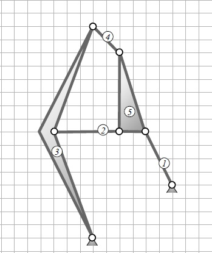

Systematic consideration of a gearing mechanism and pole establishing
Identify for the shown mechanism

the degree of freedom for the whole system
the number of meshes
the associated kinematic chain (with a sketch)
the relatively poles 02,04,05,35 (graphical)
Solution:
1. the degree of freedom for the whole system
In the first part of the task is asked for the total degree of freedom F. This is calculated according to Grübler with the following formula:
F=3(n−1)−b1−2b2
n is the number of links, b1 is the number of the monovalent and b2 is the number for the divalent joints.
The number of links is composed of 0, 1, 2, 3, 4 and 5. The third and the fifth link are represented as a surface because it has more than two link joints.
We don't have a movable bearing in this mechanism b1=0.
For the bivalent joints we have a number of b2=7. For that the two fixed bearings and the other five joints are counted.
Our result would be:
F=3(6−1)−0−2⋅7=1
2. the number of meshes
For the rule of meshes, the following equation applies
m=b1+b2−n+1
The relation of the variables from subtask 1 also apply here. So, the number of meshes would be:
m=0+7−6+1=2
3. the associated kinematic chain
First, you can see that we have represented two links as surfaces in the mechanism. So, these links (3 and 5) will be draw in as triangles.
You can see that the links 3 and 5 are directly connected to the links 2 and 4.
Furthermore, link 0 (the environment) must be connected to link 1. Link 1 should be connected to link 5 as well.
This creates the following kinematic chain:
Stephenson's chain
4. the relatively poles 02,04,05,35 (graphical)
First, we determine the apparent poles, where the links are clearly visible. The poles, which are connected by divalent joints with the environment, we label with a zero and the number of each link. Here we have 01 and 03.
In the next step you label the link joints between the links, which are clearly visible. For example 15, 23, 25, 34 and 45.
So, we have already determined 7 out of 15 relative poles.
To determine the remaining poles, you can create a matrix to help. You can sweep away the poles you already have.
⎝⎜⎜⎜⎜⎛010212031323041424340515253545⎠⎟⎟⎟⎟⎞
By drawing a polygon, you can find the indefinite relative poles much faster.
In our case, the procedure for creating a polygon would be:
Drawing the 6 links as circles, starting with 0.
Draw in the given links (here grey).
To find a missing relative pole, you have to see this connection as a possible side of two triangles. The triangles 3, 4, 5 and 2, 3, 5 creating the pole 35 here.
That means that our first straight line proceed through the poles 34 and 45 and the second is 23 and 25.
Now we can draw in the first missing relative pole 35 (here red)
So, we are looking for two more triangles, where a common side is missing, until we have determined the necessary relative poles.
For the searched pole 05 we use the triangles 0, 1, 5 and 0, 3, 5.
The first straight line goes through the pole 01 and 15. The second through 03 and 35.
These straight lines form the intersection for the pole 05.
Next we determine the unknown pole 04. It consists of the triangles 0, 4, 5 and 0, 3, 4 in our polygon.
The first straight line goes through the poles 05 and 45 and the second through 03 and 34.
The intersection they form in the now known Pol 04.
Now we determine the last pole searched 02. This consists of the triangles 0, 2, 3 and 0, 2, 5.
The first straight line goes through the poles 03 and 23, the second through 05 and 25.
At the intersection of this line is the pole 02.
Polygon
The relative poles in this mechanism are drawn in like this: